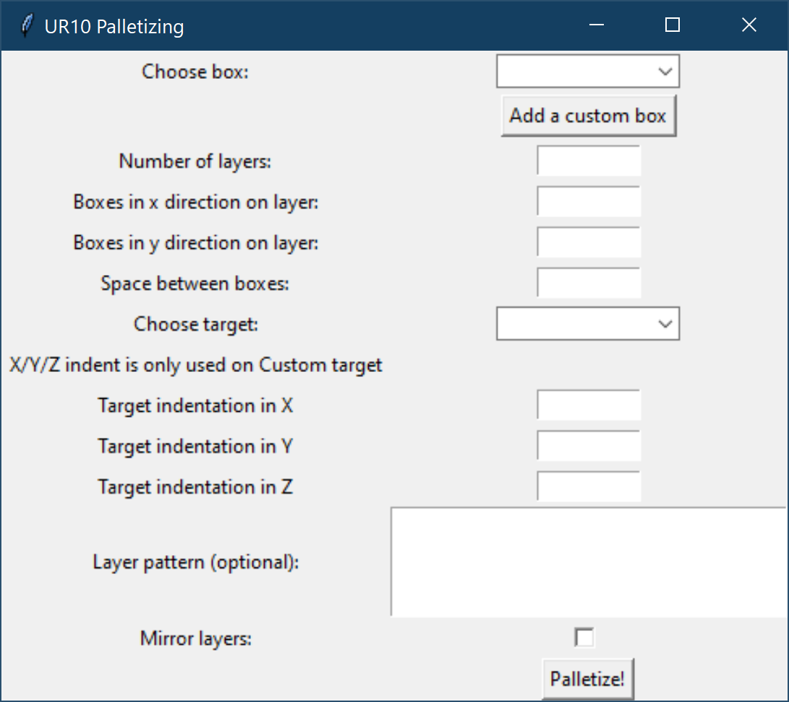

Prosjektet inneholder en algoritme for palletizing av ekser med en robot, samt et enkelt gui for testing av algoritme.
pip install robodk
Hvis det skulle oppstå problemer med avhengigheter er det lagt med en "requirements.txt" fil.
"requirements.txt" inneholder alle installerte pakker på en maskin som kjører prosjektet uten problemer.
For å installere pakker fra "requirements.txt" kjør
pip install -r requirements.txt
Prosjektet bruker roboDK API til å kjøre. Når programmet blir åpnet vil den prøve å starte RoboDK hvis den ikke finner det
Når RoboDK er åpnet setter du opp arbeidsområdet slik du ønsker. Det eneste som må husker er at roboten som du skal brukes til palletering må hete "robot", tool må hete "tool" og då må ha basen til roboten navngitt som "robot base"
Der boksene skal plukkes fra må ha en frame som heter "pickFrame". Du kan også definere frames "placeFrameLeft" og "placeFrameRight", men disse er ikke nødvendige for at programmet skal kjøre.
Hvis "placeFrameLeft" og "placeFrameRight" ikke er definert, er det best å holde seg til "custom" target. Hvordan dette fungerer er forklart senere.
Når alt er satt opp og du kjører GUI vil en meny med flere valg komme opp. Alle mål er i millimeter.
"Choose box" lar deg velge hvilken boks du vil teste algoritmen med. Disse er lagret i en json fil som kan endres manuelt.
Du kan lage en ny boks via "Add a custom box". Dette åpner et nytt vindu hvor du skriver inn bredde, lengde, høyde samt et navn for boksen. Lagrer du boksen etter å ha fyllt in dette vil den komme opp i menyen for bokser
Boksene blir automatisk lagt inn i koordinatene 0,0,0 i "pickFrame"
"Number of layers" sier hvor mange lag med bokser du ønsker vertikalt. "Boxes in x direction" og "Boxes in y direction" er de horizontale retningene, med hver av de definert av retning til X og Y i rammen hvor boksene blir plasert.
"Space between boxes" lar deg sette en default indent mellom hver boks. Dette kan endrer manuelt i "Layer Pattern"
"Choose Target" velger hvilken frame som boksene blir plasert i. "placeFrameLeft" og "placeFrameRight" kan bli egendefinert av bruker. "Custom" går utifra basen til Roboten som 0,0,0 posisjon, og kan i visse tilfeller være lettere å bruker
Hvis du bruker "Custom" må man ta med "Frame Indentation". Da skriver man bare hvor mange mm i hver retning bort fra basen til roboten som placePlane kommer til å være. Hvis dette ikke blir gjort vil roboten nesten garantert kræsje i seg selv
Til slutt har du "Layer pattern" og "Mirror Layers". Sistnevnte er veldig simpel i at hvis den er skrudd på, vil annenhvert lag av bokser bli speilvendt.
"Layer pattern" er litt komplisert, men lar deg endre rotasjonen og plasseringen til hver enkelt boks helt fritt. Se eget avsnitt om Layer pattern lenger ned.
Når alt er satt opp er det bare å trykke "Palletize" og roboten burde begynne å palletere i RoboDK vinduet.
Det bør merkes at det ikke er noe multithreading på programmet, så vinduet vil stoppe å fungere helt mens palletering kjører. Hvis du tvinger programmet til å stoppe og så starte igjen, vil det fungere.bruker
Vedlagt i filen er et RoboDK enviroment med en UR10 robot, alle frames definert og et bord for referanse. Bordet er lagd av Haris Jasarevic for anvendt robotikk hos Høgskolen i Østfold og er brukt med tillatelse.

GUI for testing av algoritme
Hver box har sin egen tuple for å sette rotasjon, x-posisjon og y-posisjon
(rot, x, y)
rot = rotasjon med klokka i grader. Hvis rot er et negativt tall vil ikke boksen bli plassert
x = antall millimeter forflytting i x retning.
y = antall millimeter forflytting i y retning`
Forflytningene kommer etter vanlig mønster.
Hver rad av bokser i x retning er en array av slike tuple'er
hver av disse arrayene er igjen inni en array.
Her kommer noen eksempler med Layer pattern og resultat.
Alle eksempler har 5mm standard mellomrom mellom boxer.
testArray = [
[(90, 0, 0), (-1, 0, 0), (90, 0, 0)],
[(0, 0, 0), (0, 0, 0), (0, 0, 0)],
[(90, 0, 0), (-1, 0, 0), (90, 0, 0)]
]
example2Array = [
[(0, 0, 0), (0, 0, 0)],
[(90, -20, 0), (90, 20, 0)],
[(0, 0, 0), (0, 0, 0)]
]
example3Array = [
[(45, -25, 0), (135, 25, 0)],
[(-1, -20, 0), (0, -25, 0)],
[(135, -25, 0), (45, 25, 0)]
]